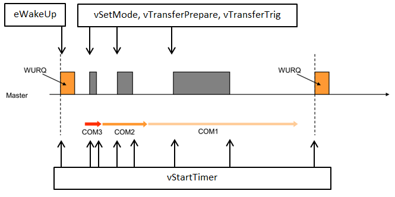

Overview
The hardware port is divided into general functions (IO-Link Port Definitions) and Master specific functions (IO-Link Master Port Definitions). All functions need to be available. For details what the port functions need to do, see the detailed description of the specific functions.
For a minimal working system, the functions of Physical Layer and Timer System need to be ported. The other functions can be left as they are in the port template.
Physical Layer
The following functions belong to the physical layer and are used to access the IO-Link Phy chips:
If a Device frame is received, the following function has to be called:
Timer System
The following functions belong to the timer system and need to be ported:
If a timer expires, the following function has to be called:
Wake-up Flow
The following image shows how the Physical Layer and Timer System functions are called during the wake-up procedure.

Physical Port Wake-up Sequence
Cycle Flow
The following image shows how the Physical Layer and Timer System functions are called during the cyclic operation. The position of IOLM_Port_PL_vTransferPrepare can differ, depending on the setting of IOLM_IRQ_PROCESSING. If this is enabled, the prepare is done with the timer interrupt during cycle start. If IRQ processing is disabled, it is done somewhere between Device receive and the start of the next cycle.
Example Code for Physical Layer
Here are some basic example code snippets to implement the Master board specific functions for a communication interface between the stack and the lower level IO-Link driver.
Basics
These functions handle the basic communication with the physical layer.
{
}
{
}
INT8U* pu8ResponseData_p,
INT8U u8ResponseLength_p)
{
}
{
}
{
}
{
}
{
}
IOL_ETargetMode
This enumeration indicates the requested operational mode of the port.
Definition: IOL_Types.h:264
uint8_t TBOOL
Boolean data type (at least 1 bit)
Definition: IOL_Port_Types.h:58
uint8_t INT8U
8 bit unsigned integer
Definition: IOL_Port_Types.h:68
IOLM_EWakeupMode
This IOL_ENUM_DECL defines the wake-up modes.
Definition: IOLM_Types.h:670
@ IOLM_eWakeupMode_Done
Wake-up is generated by port.
Definition: IOLM_Types.h:672
IOL_FUNC_DECL void IOLM_Port_PL_vTransferTrig(INT8U u8Port_p)
Start frame transmission.
Definition: IOLM_Port_Functions.c:86
IOL_FUNC_DECL void IOLM_Port_PL_vTransferPrepare(INT8U u8Port_p, const INT8U *pu8Data_p, INT8U u8DataLength_p, INT8U *pu8ResponseData_p, INT8U u8ResponseLength_p)
Prepare data exchange.
Definition: IOLM_Port_Functions.c:80
IOL_FUNC_DECL TBOOL IOLM_Port_PL_boGetDI(INT8U u8Port_p)
Get input pin value.
Definition: IOLM_Port_Functions.c:96
IOL_FUNC_DECL void IOLM_Port_PL_vSetDO(INT8U u8Port_p, TBOOL boOutValue_p)
Set output pin value.
Definition: IOLM_Port_Functions.c:91
IOL_FUNC_DECL void IOLM_Port_PL_vSwitchPortPower(INT8U u8Port_p, TBOOL boOn_p)
Switch port power on or off.
Definition: IOLM_Port_Functions.c:123
IOL_FUNC_DECL IOLM_EWakeupMode IOLM_Port_PL_eWakeUp(INT8U u8Port_p)
Send wake-up pulse.
Definition: IOLM_Port_Functions.c:73
IOL_FUNC_DECL void IOLM_Port_PL_vSetMode(INT8U u8Port_p, IOL_ETargetMode eTargetMode_p)
Set physical layer mode.
Definition: IOLM_Port_Functions.c:68
Callbacks
These callbacks are generated by the IO-Link driver to send the received events/data back to the stack.
void IOLM_Port_cbTimerCallback(u8Port_p)
{
}
void IOLM_Port_cbXferRspCallback(IOLINK_Handle suIOLHandle_p,
INT32U u32Port_p)
{
}
void IOLM_Port_cbXferErrRspCallback(
INT8U u8Port_p)
{
}
uint32_t INT32U
32 bit unsigned integer
Definition: IOL_Port_Types.h:72
@ IOL_eTransferStatus_OK
No error occurred.
Definition: IOL_Types.h:101
@ IOL_eTransferStatus_FRAMING_ERROR
Invalid UART stop bit detected.
Definition: IOL_Types.h:105
IOL_FUNC_DECL void IOLM_API_vTimerExpired(INT8U u8Port_p)
Port timer expired.
Definition: IOLM_SYS.c:227
void IOLM_API_PL_vTransferInd(INT8U u8Port_p, INT8U u8DataLength_p, IOL_ETransferStatus eStatus_p)
Data receive processing finished.
Definition: IOLM_DLA.c:248
Timer System
These timer related functions need to be implemented.
{
}
{
return s32ClockGetTicks;
}
int32_t INT32S
32 bit signed integer
Definition: IOL_Port_Types.h:64
IOL_FUNC_DECL void IOLM_Port_vStartTimer(INT8U u8Port_p, INT32U u32TimeUs_p)
Start port hardware timer.
Definition: IOLM_Port_Functions.c:138
IOL_FUNC_DECL INT32S IOLM_Port_s32SysTickVal(void)
Get SysTick value.
Definition: IOLM_Port_Functions.c:143
Physical Frame Handler and/or Cycle Timer
If the IO-Link hardware implementation offers a physical frame handler, the stack calls this function and the driver implementation needs to send back the negotiated baud rate.
{
return eReceivedBaudrate;
}
IOL_EBaudrate
This enumeration indicates the transmission rate.
Definition: IOL_Types.h:308
IOL_FUNC_DECL IOL_EBaudrate IOLM_Port_PL_eSetFHCfg(INT8U u8Port_p, INT8U u8PdOut_p, INT8U u8PdIn_p, INT8U u8ODLen_p, INT8U u8IOLCycle_p)
Frame handler setup.
If the IO-Link hardware implementation offers a physical cycle timer, the stack calls this function to set it up.
{
}
IOL_FUNC_DECL void IOLM_Port_PL_vSetPhyCycleTimer(INT8U u8Port_p, INT32U u32TimeUs_p)
Cycle timer setup.


 1.9.1
1.9.1